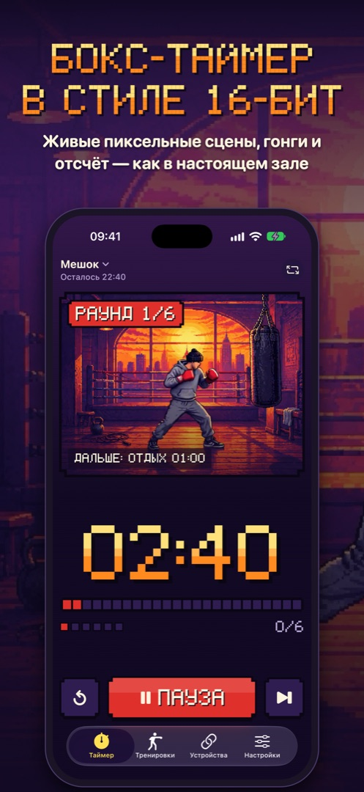
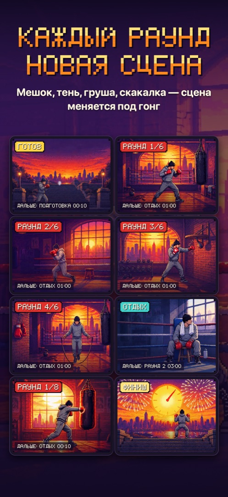
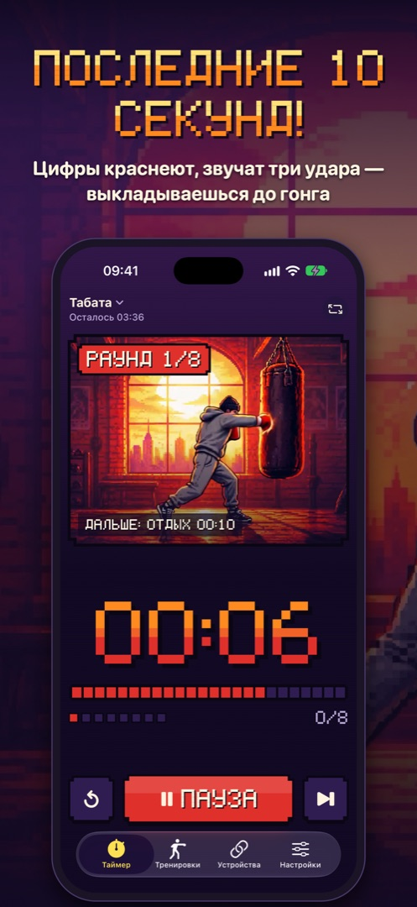

Pixel Boxing
Таймер раундов для бокса, ММА и интервалов с живыми пиксельными сценами



Поддержка
Нашли ошибку, есть идея или вопрос? Напишите нам: denisshvarev@icloud.com. Отвечаем в течение двух рабочих дней.
Пожалуйста, укажите модель устройства, версию iOS и что происходило перед ошибкой.
Частые вопросы
- Не слышно гонга
- Проверьте громкость и переключатель «Без звука». В настройках приложения есть отдельные ползунки громкости для сигналов и голоса.
- Как подключить пульт?
- На устройстве с таймером: «Устройства» → «Показать код». На втором iPhone: «Устройства» → «Пульт» и введите код. Устройства должны быть в одной сети Wi-Fi.
- Как работает Apple Watch?
- Установите Pixel Boxing на часы из приложения Watch на iPhone. Часы показывают таймер iPhone, управляют им и вибрируют при смене раунда.
- Запись в «Здоровье»
- Включите в «Настройки» → «Здоровье». Тренировка записывается после завершения. Отключить доступ можно в Настройках iOS → Здоровье → Доступ к данным → Pixel Boxing.
- Таймер собьётся, если заблокировать экран?
- Нет. Время считается по системным часам, и после разблокировки таймер покажет точное время. Звуки продолжают играть в фоне.